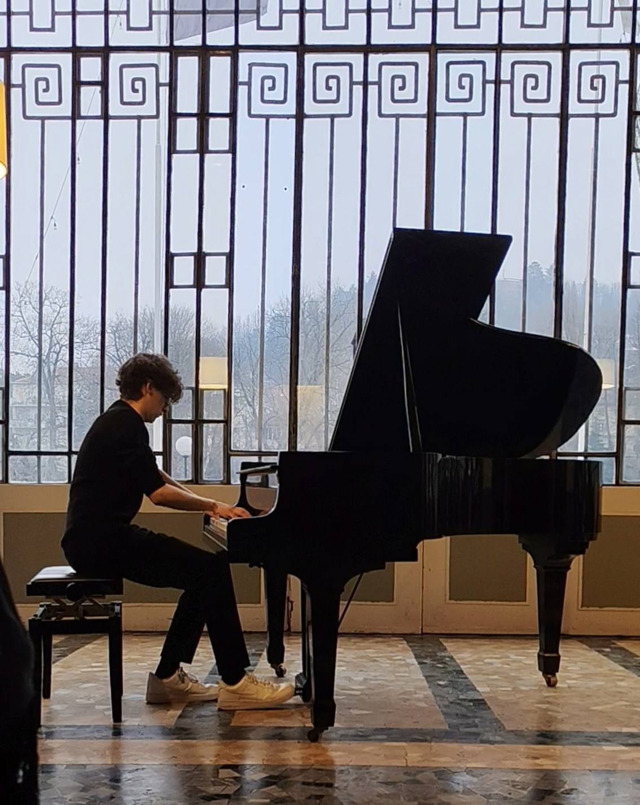
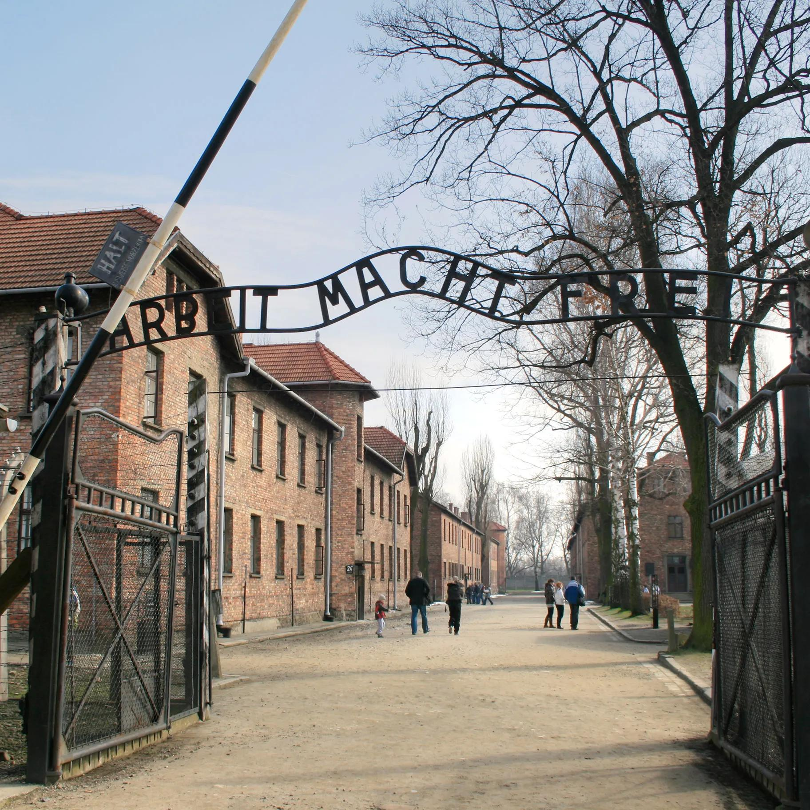
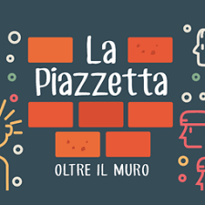
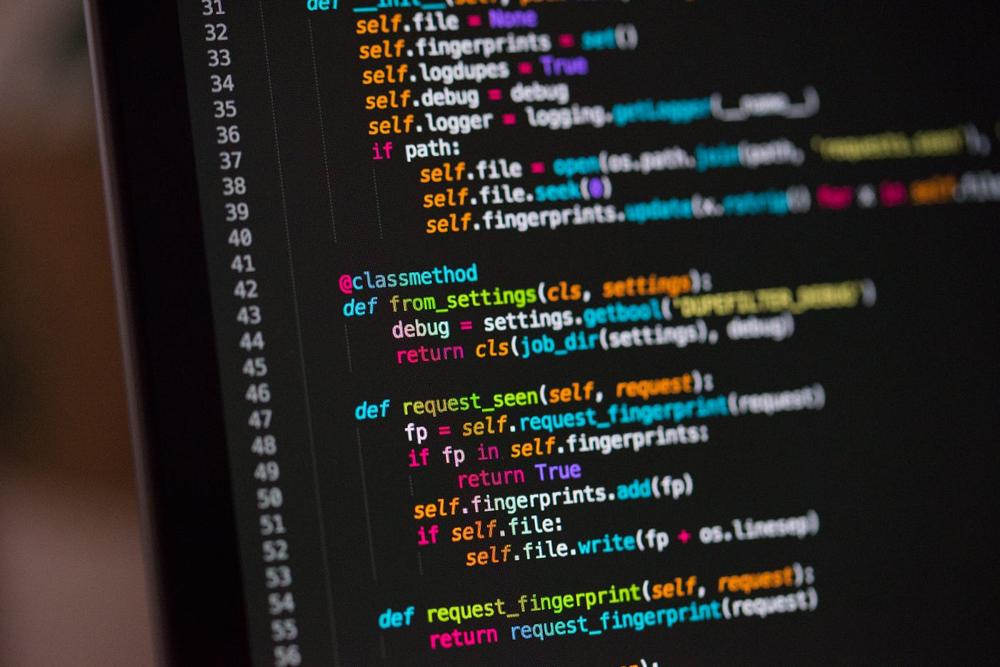

Sono Simone Costante, studente della classe 5F. Questo spazio rappresenta chi sono oggi, frutto di un percorso di crescita personale che va oltre i banchi di scuola, guidato dalle mie passioni più grandi: il pianoforte, la musica e la programmazione.
Lo studio del pianoforte mi ha insegnato la disciplina, la costanza e il valore dell'ascolto. La musica è per me uno spazio di creatività e di espressione. Parallelamente, il mondo della programmazione mi ha affascinato per la sua logica rigorosa: scrivere codice significa imparare a scomporre problemi complessi e a costruire soluzioni passo dopo passo.
Coltivare queste due anime - quella artistica e quella tecnico-scientifica - mi ha permesso di maturare profondamente. Ho sviluppato competenze che ritengo fondamentali: la pazienza nell'affrontare gli errori (che si tratti di uno spartito difficile o di un errore nel codice) e la capacità di organizzare il mio tempo in modo autonomo.
Queste sono le basi con cui ho affrontato non solo i miei studi, ma anche le esperienze pratiche che vedremo in seguito.
Video Capolavoro
Queste tre esperienze hanno contribuito alla mia crescita personale e alla mia maturazione, rappresentando
tappe significative del mio percorso formativo.
È stato un percorso trasversale tra tecnologia, impegno sociale e apertura culturale, che ha
consolidato la mia maturità individuale e delineato la mia visione professionale.
Visita dei campi di concentramento in Polonia, esperienza formativa dedicata alla memoria storica e alla comprensione.

Collaborazione e attività di sensibilizzazione a supporto di ragazzi con difficoltà.

Corso di 30 ore dedicato all'analisi dei dati mediante il linguaggio di programmazione Python.

Il corso di Python, tenuto dal professor Cane e dalla professoressa Balestrino, mira a fornire agli studenti e alle studentesse competenze di base nella programmazione, favorendo lo sviluppo del pensiero logico e la comprensione dei concetti fondamentali di codifica e problem solving.
Il corso di Python ha rappresentato una delle esperienze più significative del mio percorso di FSL,
permettendomi di avvicinarmi ulteriormente al mondo della programmazione e di comprendere con maggiore
consapevolezza quale strada desidero intraprendere dopo il diploma.
Oltre alle competenze tecniche, questa esperienza mi ha permesso di sviluppare importanti
competenze trasversali, fondamentali sia nel percorso scolastico sia in
quello
professionale. Ho migliorato la mia capacità di problem solving, imparando ad affrontare gli errori con
metodo e spirito critico, trasformandoli in occasioni di crescita e apprendimento.
Il corso mi ha inoltre aiutato a sviluppare maggiore autonomia, organizzazione del lavoro e capacità di
ragionamento logico, rendendomi più consapevole del modo in cui affronto le difficoltà e gestisco i
progetti.
L'aspetto più importante è stato però personale:
mi ha fatto capire quanto il mondo dell'informatica rispecchi realmente i miei interessi
e le mie attitudini, e ho compreso che desidero continuare il mio percorso di studi e il mio futuro
professionale nell'ambito tecnologico e informatico.
Nel complesso, questa esperienza non è stata soltanto un'attività scolastica,
ma un percorso che mi ha permesso di crescere, acquisire sicurezza nelle mie capacità e definire con
maggiore chiarezza gli obiettivi che desidero raggiungere in futuro.
Lo studio della programmazione mi ha fornito gli strumenti ideali per sviluppare una riflessione critica sulle moderne tecnologie. Python, infatti, è il linguaggio cardine su cui si fonda lo sviluppo dell'Intelligenza Artificiale, un'innovazione che solleva profonde questioni democratiche, ambientali ed etiche.
Python è il motore fondamentale dietro la creazione degli algoritmi di Intelligenza Artificiale. Tuttavia, per addestrare questi modelli servono enormi quantità di dati. Oggi, il controllo di questi flussi informatici è concentrato nelle mani di pochissime multinazionali e superpotenze mondiali. Questo monopolio tecnologico crea un forte squilibrio democratico: chi possiede le infrastrutture ha il potere invisibile di influenzare l'opinione pubblica e l'economia globale, rendendo urgente una regolamentazione internazionale condivisa.
L'efficienza del calcolo, che in piccolo sperimentiamo attraverso la logica del codice e l'analisi dei dati, su scala globale richiede risorse immense. L'addestramento dei modelli di IA avviene in enormi data center che consumano grandi quantità di energia elettrica e milioni di litri d'acqua per il raffreddamento, generando un impatto ambientale significativo in termini di emissioni di CO2. Questa consapevolezza ci ricorda che la transizione digitale non può prescindere dalla sostenibilità ambientale del pianeta.
Comprendere come nasce un software permette di guardare all'IA senza falsi miti. Nel momento in cui affidiamo alle macchine compiti decisionali complessi o l'automazione del lavoro umano, la tecnologia smette di essere neutra. Chi scrive il codice ha la responsabilità etica e morale di progettare sistemi che siano trasparenti, sicuri e orientati al bene comune. L'obiettivo dell'informatica deve rimanere l'emancipazione dell'uomo, garantendo che lo sviluppo tecnologico resti sempre guidato da sani principi morali.